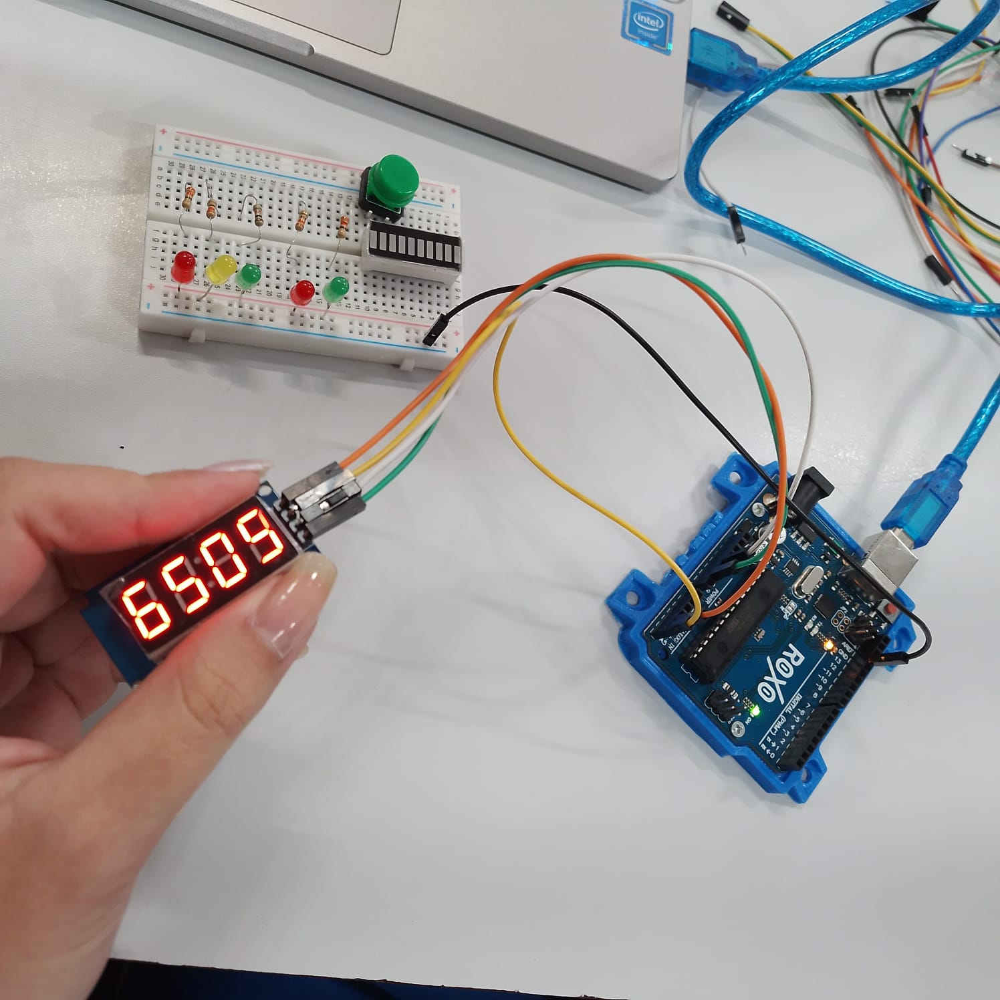
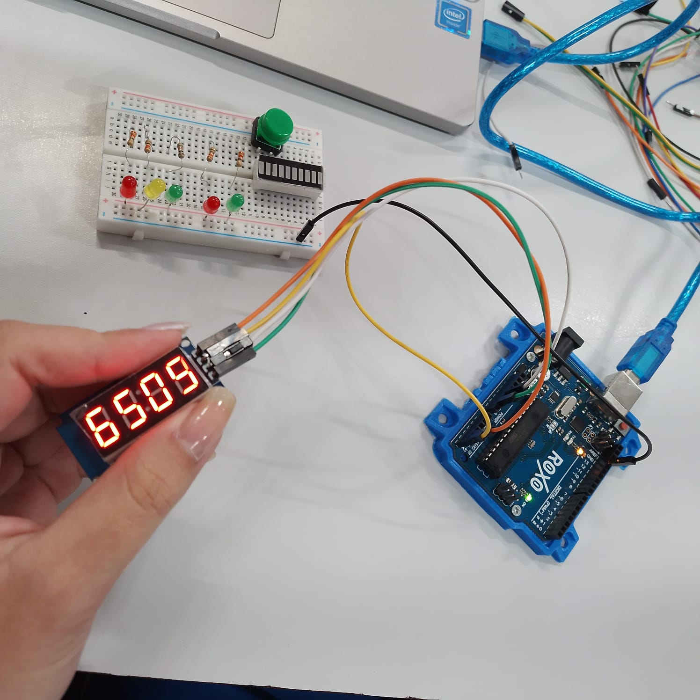

Trabalho robótica
 


Essa é a primeira parte do projeto de robótica a ser desenvolvido em sala. Nessas imagens podemos observar a montagem da estrutura do sinaleiro para carros e pedestres, o que funcionará baseado no pushbottom verde, também perceptível nas fotos. Esse esquema será controlado por um Timer (o contador), já que foi adicionado pela equipe.